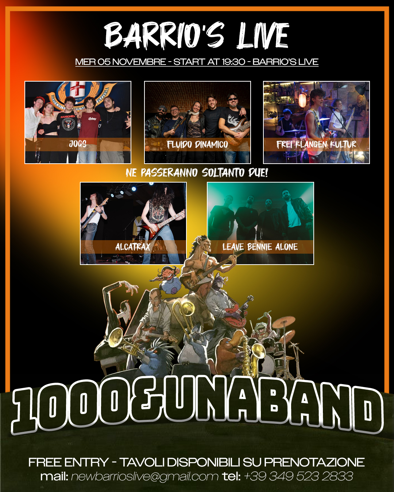

About us
What do you get by putting together five guys with a passion for rock music? Just Ordinary Group Stuff.
Formed in 2020, the band is here to prove they’re in fact not ordinary at all: the different musical influences of each member lead to the creation of songs which contain many shades of different genres and are affected by the contemporary and dynamic nature of their home city, Milan.
The band consists of vocalist Margherita Mischi, lead guitarist Simone Gattoni, rhythm guitarist Luca Bagnaschino, bassist Federico Mango, and drummer Matteo Borlacchi.
Simone Gattoni
Lead guitarist
Luca Bagnaschino
Rhythm guitarist
Federico Mango
Bassist
Matteo Borlacchi
Drummer
Margherita Mischi
Vocalist
Concerts
November 5th, 2025 - Barrio's
Contest: 1000 & Una Band
📍 Piazza Donne Partigiane, 20142 Milano MI
Merch

Official T-shirt

Official CD

Official Poster
Our Music
Decisions
A powerful rock track that mixes modern vibes with classic energy — the sound that defines JOGS.
Shining Hill (Where is my paradise?)
Explosive riffs and deep lyrics — a song that captures the raw intensity and emotion of the band.